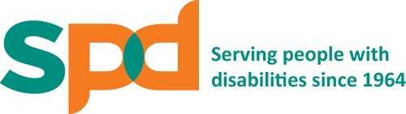
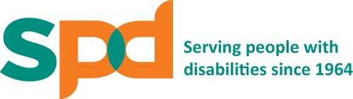

"Too often we underestimate the power of a touch, a smile, a kind word, a listening ear, an honest compliment, or the smallest act of caring, all of which have the potential to turn a life around."
- Leo Buscaglia
Currently, 17.6 per cent of the population here are aged 65 and above. By 2030, it will spike to about 25 per cent with more than 900,000 senior citizens. Already, there are almost 70,000 seniors who are unable to perform or who have difficulty performing one basic activity, such as self-care.

“If kids come to us from strong, healthy, functioning families, it makes our job easier. If they do not come to us from strong, healthy, functioning families, it makes our job more important.”
- Barbara Colorose
Many factors contributes to a child's development. It is crucial that we provide a child with a conducive environment for them to grow and nuture. Many children in Singapore may be less fortunate and struggle to cope with their early education days. This is where you can step in and volunteer your time and effort through various ways and be play a part in the positive change in the child's life. Here are some organizations you can consider!

 

“I don't want to live in the kind of world where we don't look out for each other. Not just the people that are close to us, but anybody who needs a helping hand. I cant change the way anybody else thinks, or what they choose to do, but I can do my bit.”
- Charles de Lint
Do drop your email if you want updates of any new volunteering opportunities!